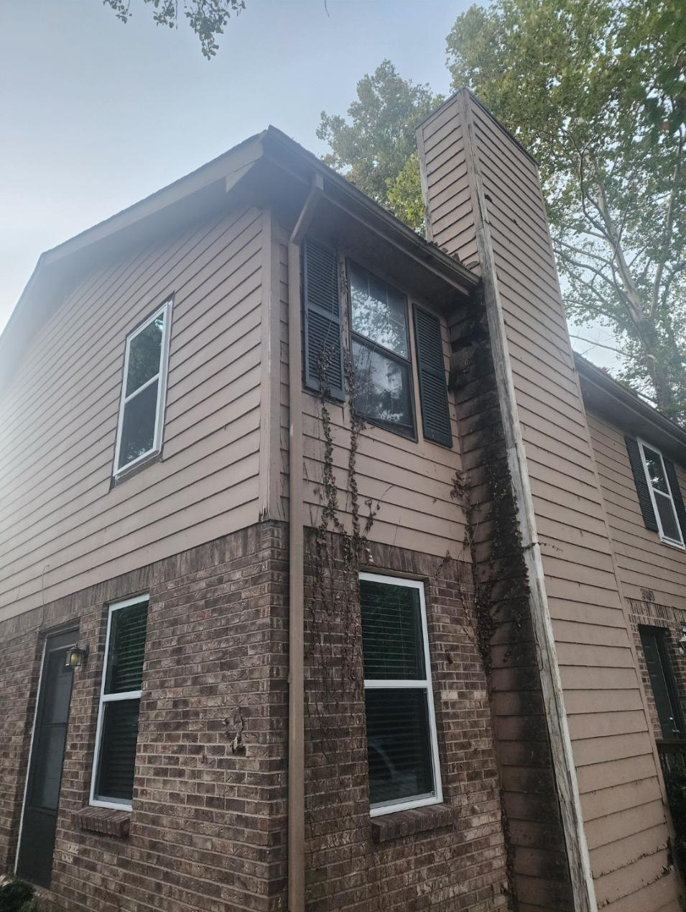
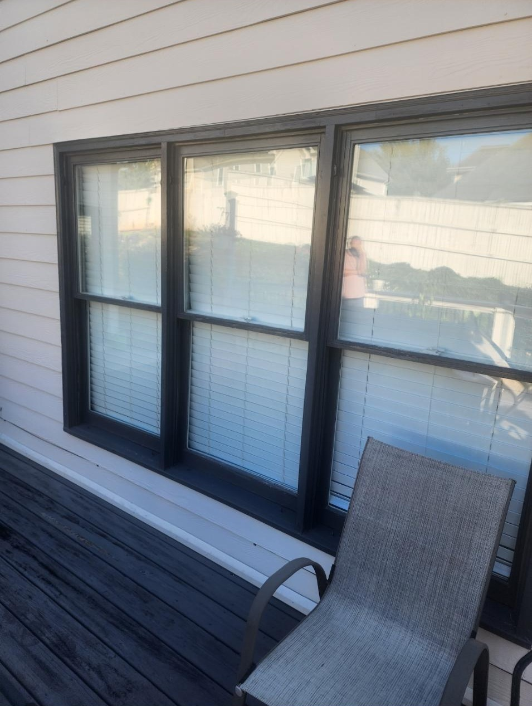

Local Window Replacement
Replacement Windows For Nashville Homes
Nashville homeowners need window replacement options that fit everything from older cottages and ranch homes to larger modern properties.
Older Nashville homes may have drafty openings, painted-shut windows, fogging glass, or windows that do not match the home’s updated style. Blue Haven Windows brings a local, family-owned approach focused on communication, integrity, and long-term value.
We serve Nashville homeowners across areas such as Green Hills, Bellevue, Donelson, Hermitage, Sylvan Park, East Nashville, and nearby Davidson County communities.
Window Services
Services Available In Nashville
Explore the window services most Nashville homeowners compare before scheduling an estimate.
Local Process
A Clear, Low-Pressure Process
- 1. Request your free estimate.
Share your goals, concerns, and location in Nashville.
- 2. Review window options.
Stephen explains product choices, installation details, warranty options, and fair pricing.
- 3. Install with confidence.
The Blue Haven Windows team focuses on communication, clean work, and long-term value.
Internal Links
Nearby Service Areas
Recent Reviews
Homeowners Mention Honesty, Communication, And Fair Pricing
★★★★★
"Great experience with Blue Haven Windows! Easy to work with, great communication, and the windows turned out awesome."
Julie Kunkleman
★★★★★
"You won't find anyone more hardworking or honest than the team at Blue Haven Windows."
Chip Waller
★★★★★
"Stephen listened to my needs and preferences, shared helpful product information, and explained my choices well."
Grahams Family
Project Photos
Finished Window Project Photos
Blue Haven Windows is building a larger before-and-after library. For now, here are finished installation photos showing completed window projects and product details.

Finished Exterior Window
Completed installation with clean white trim.

Finished Two-Story Update
Updated windows shown from the exterior.

Finished Modern Frames
Dark-framed replacement windows after installation.
FAQ
Nashville Window Replacement FAQ
Does Blue Haven Windows serve Nashville TN?
Yes. Nashville is one of the current Blue Haven Windows service areas for replacement windows and installation.
Can replacement windows help older Nashville homes?
Yes. Replacement windows can improve comfort, operation, curb appeal, and efficiency when installed properly.
Do Nashville homeowners get a free consultation?
Yes. Homeowners can request a free estimate or call (615) 987-0593 to discuss the project.
Limited-Time Promotion
Ready For Replacement Windows In Nashville?
Ask about Buy 2 Windows, Get 2 Free, call Blue Haven Windows, or send a message through the estimate form when you are ready to talk through your project.